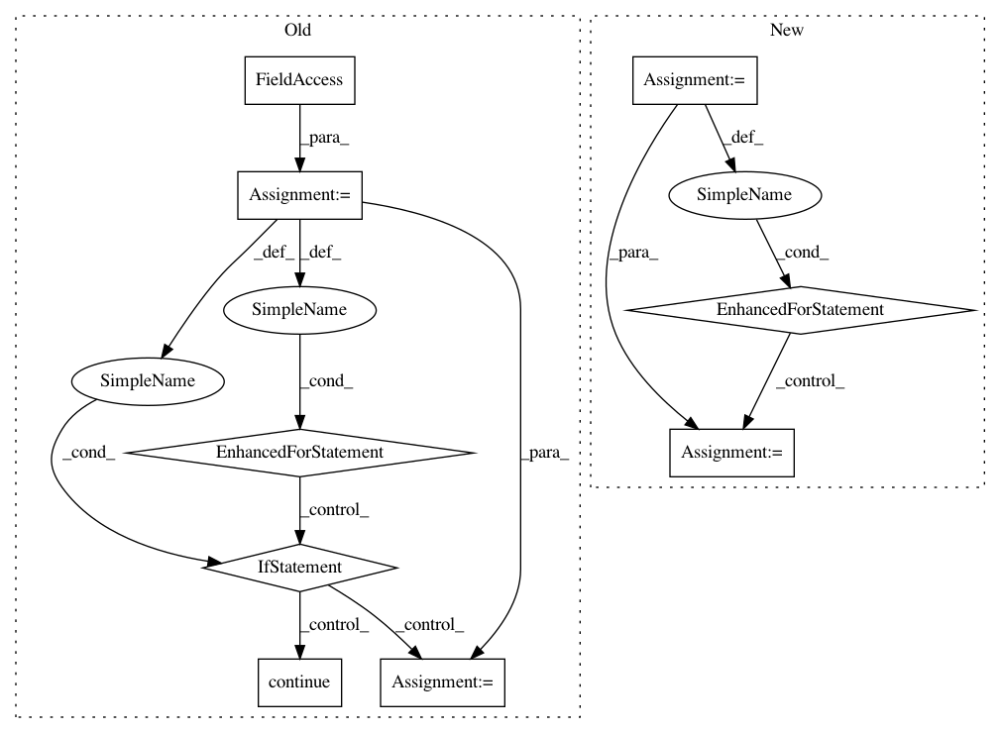

e144e814fa4b542fa70c5b4c167d1253a7a25342,skbio/maths/gradient.py,,make_groups,#Any#Any#Any#Any#,36
Before Change
sort_f = lambda sid: sid
// Loop through all the sample ids present on the mapping file
for sid in metamap.sample_ids:
if sid not in ord_res.site_ids:
continue
// Get the group for the current sample
g = metamap.get_category_value(sid, vector_category)
// Add the current sample to the group
groups[g].append((sort_f(sid), sid))
// Sort the groups
for g in groups:
groups[g] = signed_natsort(groups[g])
return groups
After Change
// Group by vector_category
metamap_t = metamap.transpose()
gb = metamap_t.groupby(vector_category)
groups = {}
for g, df in gb:
groups[g] = signed_natsort([(sort_val(sid), sid) for sid in df.index])
return groups
def weight_by_vector(vector, w_vector):
In pattern: SUPERPATTERN
Frequency: 3
Non-data size: 9
Instances
Project Name: biocore/scikit-bio
Commit Name: e144e814fa4b542fa70c5b4c167d1253a7a25342
Time: 2014-04-29
Author: josenavasmolina@gmail.com
File Name: skbio/maths/gradient.py
Class Name:
Method Name: make_groups
Project Name: CyberReboot/NetworkML
Commit Name: d3babe1252d05f07e58a6602b47e1a09bbd56af5
Time: 2019-12-10
Author: josh@vandervecken.com
File Name: networkml/parsers/pcap/reader.py
Class Name:
Method Name: packetizer
Project Name: commonsense/conceptnet5
Commit Name: db4b9f4d50af9e83733fc301c32e85cbe6d9c812
Time: 2014-02-25
Author: rob@luminoso.com
File Name: conceptnet5/builders/json_to_solr.py
Class Name:
Method Name: convert_to_solr